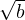
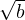
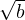

> 
> 
Assume points a and b such that their coordinates in an N dimensions space are {ai | i ∈ ℝ ∧ 1 ≤ i ≤ N} = {a1,a2,...,an} and {b1,b2,...,bn}.
The euclidean distance between points a and b is defined as:
However, if all we care about is the relation between distances, we do not need to square root the sum since:
∀a,b ∈ ℝ+. a > b ⇐⇒ > 